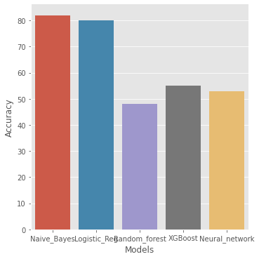

Project 1
Fake News Detection Classifier

The ability to distinguish between reliable news stories and deliberate hoaxes or sarcastic news has become increasingly important with the spread of such information over social media networks. Big tech and social media companies are particularly interested in the reliability of content being disseminated on their platforms. These platforms would ideally like to be able to detect and flag articles suspected of being “fake news” automatically.
- Created a tool that correctly classifies fake news from real news with an accuracy of 81%.
- Engineered features from the text of each news headline to quantify the value added by NLP, count vectorization, tokenization, etc on the data mining process.
- Optimised Linear, Random Forest classifier, XGBoost and a neural network to reach the best model.